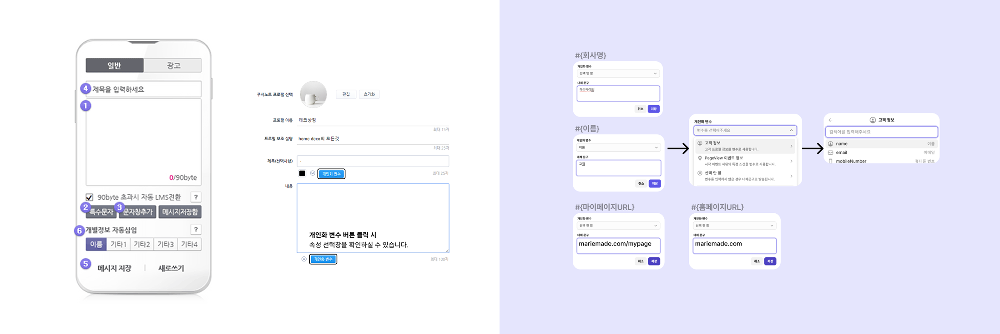
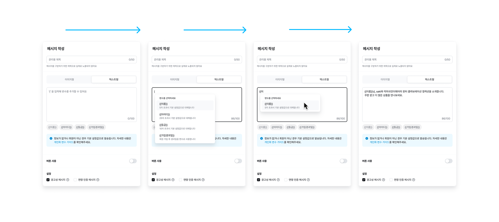
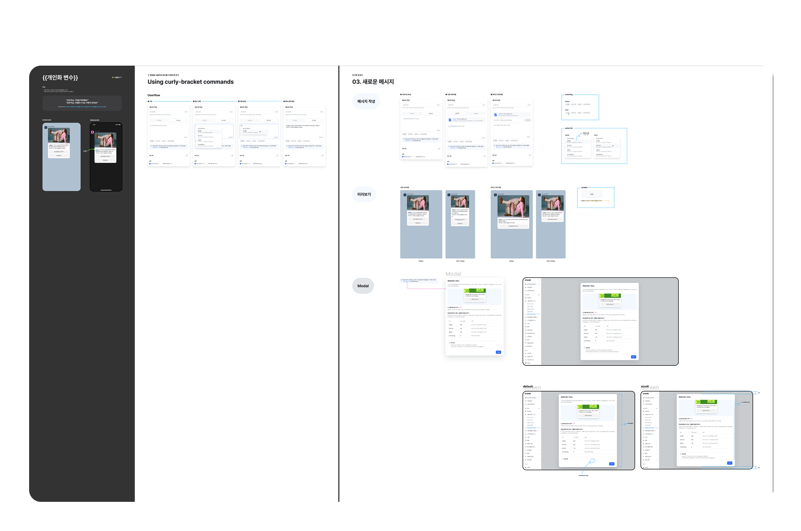
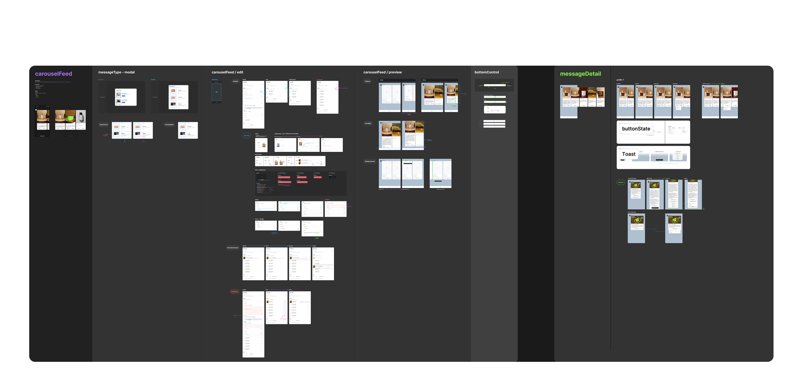
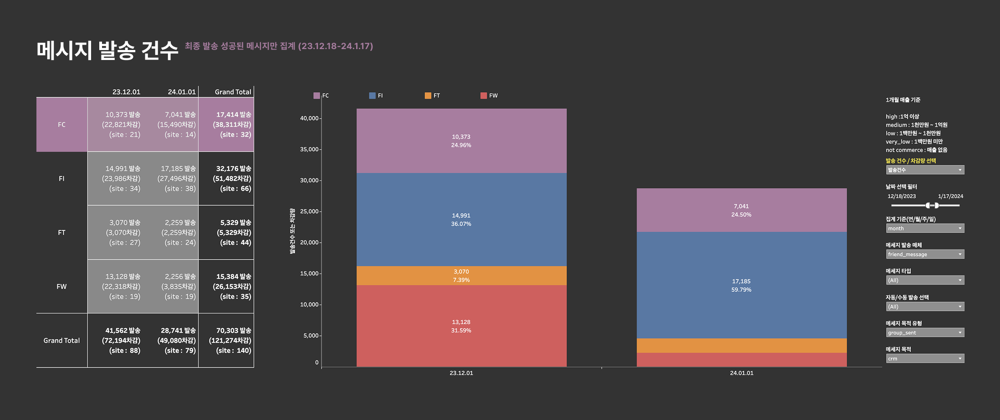

CRM 1친구톡 개인화 변수,
2캐러셀 피드형 템플릿

Overview 개요
사용자 경험과 CRM 제품의 완성도를 높일 수 있는 프로젝트를 진행 했습니다.
카카오 친구톡 메시지에 개인화된 변수를 활용하여 맞춤 컨텐츠를 제공합니다. 여러 개의 카드를 스와이프하여 확인할 수 있는 '캐러셀 피드형' 템플릿은 친구톡에서 가장 자주 쓰이는 템플릿 중 하나로, 사용자의 고객(End User)들에게 보다 다양한 콘텐츠를 제공해줄 수 있는 환경을 만들어 메시지의 효율을 높일 수 있습니다.
Collaborators 협업
Platform designer(1), Product owner(1), Front-end engineer(1), Back-end engineer(1)
Goals 목표
개인화 변수를 동적으로 삽입하여 메시지를 발송할 수 있는 기능을 구현하고, 이름, 아이디, 등급, 가입 경과일 등 고객 회원 정보를 활용해 메시지를 개인화 합니다.
사용자가 카카오 친구톡을 통해 상호작용할 때의 UI/UX를 디자인합니다. 이는 버튼의 위치, 상호작용 플로우, 애니메이션 등을 포함합니다.
Role & Process 역할 및 프로세스
Research, Product Designer : 100% 기여
개인화된 메시지를 제공할 수 있는 개인화 변수 구현 방식을 연구했습니다.
루나 소프트가 제공하는 솔루션의 API를 분석해 구현 가능한 범위를 파악합니다. API 기능을 효율적으로 활용할 수 있도록 사용자 인터페이스를 설계합니다.
유지보수 및 작업 효율을 높이기 위해 기존 디자인을 Clay에 맞춰 리팩토링을 진행 했습니다.
Research 연구
경쟁사 분석을 통해 개인화 변수 기능을 어떻게 제공하고 있는지 패턴을 조사했습니다. 대부분 버튼으로 제공하거나 직접 입력을 했어야 했는데 이러한 방법들은 사용자들에게 불편하거나 복잡한 경험을 제공하고 있다고 생각 했습니다.
쉽고 빠르게 변수 기능을 사용할 수 있는 방법을 고민했고, 명령어를 통해 변수를 호출하는 아이디어를 제안했습니다. 이 아이디어는 팀 내에서 좋은 반응을 얻었고 제품으로 출시될 수 있었습니다.

User Flow 유저플로우
중괄호 명령을 사용하여 변수를 더 빠르게 추가할 수 있습니다.
메시지를 입력할 때 { 를 누르면 추가할 수 있는 변수 목록이 나타나고, 원하는 변수를 마우스나 방향키로 더 빠르게 추가할 수 있습니다.
변수 없이 { 를 입력하려면 Esc를 눌러 변수 목록을 닫습니다.

Design 디자인


Results and
Achievements 결과 및 성과
캐러셀 유형 배포 후 1개월 동안 발송된 친구톡 메세지중 발송건수 17,414건(24.7%)으로 2위를 달성했습니다.
높은 오픈율은 사용자들이 알림 센터를 활발하게 이용하고 있다는 것을 시사하며, 우리 서비스가 사용자들의 요구를 충족시키고 유용한 정보를 제공하고 있는 것으로 해석될 수 있습니다. 나아가 우리의 제품과 서비스에 대한 성장과 발전에도 긍정적인 영향을 미칠 것으로 기대됩니다.
